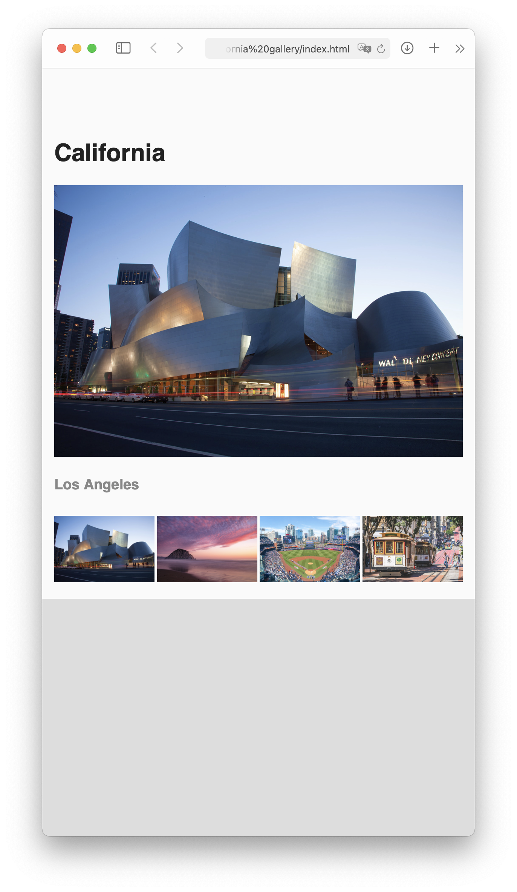

I’m providing the structure for a webpage, and your job is to edit both your HTML and your CSS files to make the thumbnails control the main image and page match the following layout:

Publish your pages on the URL: username.github.io/grc339/css-photo-gallery
As usual, the assignment is similar to the video. But there are few differences beyond the style:
Instead of three images like in the video, there are four images in the assignment.
Instead of Flexbox, I used CSS Grid for the navigation.
The transitions from one image to another should be done only with transparency, not movement.
The transitions should take half of a second, instead of the full second.
Download this zip file.
Unzip the file. It contains one HTML file, four images, and one CSS file.
Open the HTML and CSS in VS Code (or your text editor of choice).
Open the HTML file on your favorite browser Firefox.
Give the proper value to the following lines on the HTML: 39, 42, 45, and 48.
Give the proper value to the following lines on the CSS: 32, 33, 40, 41, 42, 57, 61, 62, 63, and 68.
Don’t change anything else on your HTML or CSS.
The transitions from one image to another should be done only with transparency, not movement. (Which is different from the video.)
The transitions should take half of a second. (Again, different from the video.)
There needs to be a gap of 0.2em between the thumbnails in the navigation.
There are several possible values for the line 62 of your CSS. You want to use the one that makes more sense semantically. Remember, it’s a repetition of the same width four times, but you don’t know what width is that, especially with the gaps. And you don’t want to do complex maths, you just want to make sure that each one of them takes the same fraction of the navigation grid width. (I’m afraid I can’t give you more hints without writing the value for you.
You’ll be evaluated on your technical skills using HTML and CSS, making the layout work as indicated above.
Go to your grc339/css-photo-gallery/ folder in your public repository on GitHub. ➤
Upload all six files (index.html, grid.css, and the four images) to your GitHub repository. ➤
Click on your name to check if it’s working.
If it works, submit to Canvas the name of a sitcom you’d like to recommend. (I’ll tally the numbers and share some of the most recommended in the journal comments.)
Due Thursday, 2 July 2021, at 11:59 pm.